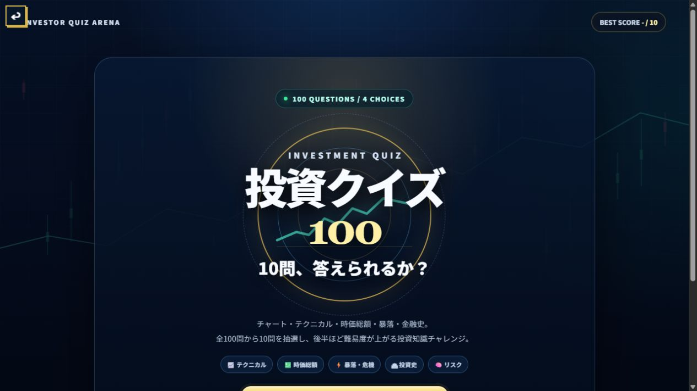

進め方
全100問から、難易度1〜5の問題を2問ずつ選び、合計10問をランダムに出題します。各問は4択です。回答後に正解と短い解説が表示されるので、NEXT QUESTIONで次へ進みます。
- 「挑戦を開始する」を押します。
- 4つの選択肢から1つを選びます。
- 正誤と解説を確認します。
- 10問終了後に正答数、正答率、連続正解数を確認します。
出題分野
| 企業の数字 | 時価総額、PER、PBR、配当、企業価値など。 |
|---|---|
| チャート | ローソク足、移動平均、RSI、出来高、サポートとレジスタンスなど。 |
| リスク | 損益率、最大ドローダウン、分散、複利と損失の関係など。 |
| 金融史 | 世界恐慌、ブラックマンデー、アジア金融危機、リーマン・ショックなど。 |
補助機能
1ゲームにつき1回だけ「50:50」を使えます。不正解の選択肢を2つ消し、2択に絞れます。チャート付きの設問では拡大ボタンが使えます。
保存される内容
最高正解数のみをブラウザ内に保存します。名前、メールアドレス、証券口座情報などは入力しません。ブラウザデータを削除すると最高記録も消えます。
問題作成時の確認先
金融史に関する設問は、Federal Reserve History、日本銀行などの公的・一次資料を中心に確認しています。用語や制度は変更されることがあるため、実務で使う場合は最新の公式資料を確認してください。
制作意図
投資用語は一つずつ読むと理解したつもりになりやすいため、短い設問で知識を取り出す練習ができる形にしました。間違えた直後に理由を読めること、初歩から少し考える問題まで段階的に出ることを重視しています。
学習上の注意
クイズは一般的な知識を確認するためのものです。相場のシグナルは確率的な判断材料であり、正解を知っていても利益を保証しません。本作は投資助言ではありません。
クイズは一般的な知識を確認するためのものです。相場のシグナルは確率的な判断材料であり、正解を知っていても利益を保証しません。本作は投資助言ではありません。